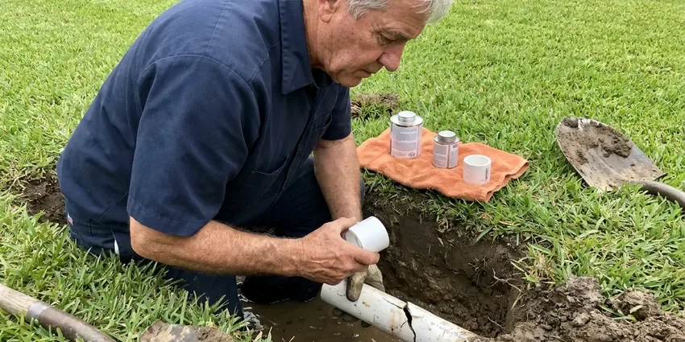

Gas Line Repair in Pine Bluff, AR
DGR Plumbing is your reliable source for professional gas line repair across Pine Bluff, AR, protecting safety and compliance.
- Upfront Pricing Every Time
- Pressure Tested to Code
- Local Pine Bluff Experts
- Certified Gas Technicians

Stop Gas Leaks Quickly With Licensed Repair in Pine Bluff, AR.
Don't compromise on safety, contact DGR Plumbing for prompt assistance with any gas line concerns.
Expert Gas Line Repair Services in Pine Bluff, AR
DGR Plumbing knows many older homes still have bare or wrapped steel gas lines buried in the yard, and those lines corrode in damp soil over decades. Houses built from the late 1970s into the mid 1990s may contain polybutylene supply lines, which are prone to fail without warning. We repair leaks, replace failing sections and perform the pressure test your utility needs to restore service.
Our expertise includes:
- Repair and replacement of natural gas and propane lines.
- Detecting and repairing gas leaks.
- Upgrading and relocating gas lines.

Additional Plumbing Maintenance Services in Pine Bluff, AR
Our maintenance and specialty plumbing services in Pine Bluff, AR protect your home year-round and extend the life of every system.


Customers
Why Choose DGR Plumbing for Gas Line Repair in Pine Bluff, AR?
Choosing DGR Plumbing means selecting a plumbing company that stands behind its work with strong warranties and a commitment to customer satisfaction. We are dedicated to delivering durable solutions for your gas system.
- Safety Focus, Our technicians are trained in gas safety protocols and use specialized equipment to detect and repair leaks the right way.
- Utility Ready, We coordinate inspections so your gas utility can restore service promptly.
- Certified Technicians, Our plumbers are well trained and licensed to work on all types of gas piping systems.
Citywide Coverage
Our plumbers cover Pine Bluff and the surrounding areas, serving homes with natural gas or propane. Outdoor kitchens, fire pits and pool heaters are all part of our work.
Experienced Team
Our team of gas line specialists at DGR Plumbing brings years of experience to every repair, having successfully tackled countless complex gas system issues in Arkansas homes. We continuously update our training to stay ahead of industry standards and technologies.
Safety-First Approach
We pull permits for gas work where required and pressure test repairs at the code-required pressure and duration. CSST systems get bonding checks to reduce lightning damage risk.
Trusted Certified Pine Bluff Plumbing Services Professionals
At DGR Plumbing, we take pride in providing certified plumbing services throughout Pine Bluff, AR. Backed by recognized industry credentials, our experienced plumbers combine technical skill with genuine customer care. Whether it is repair, installation, or maintenance, we follow strict safety and quality standards to deliver lasting results you can trust.
Call Us Now PHCC Plumbing Contractor Recognition
PHCC Plumbing Contractor Recognition Better Business Bureau (BBB) Accreditation
Better Business Bureau (BBB) Accreditation Angi Certified Pro
Angi Certified Pro ISO 9001 Quality Management Certification
ISO 9001 Quality Management CertificationTrusted Gas Line Repair Services in Pine Bluff, AR
Pool Heater, Fire Pit and BBQ Lines in Pine Bluff, AR
Outdoor living is a big part of plenty of homes, and many backyards have gas lines for pool heaters, fire pits and built-in grills. These lines face sun, weather and irrigation water that shorten their life. We repair or replace outdoor gas lines and check that they are sized for the appliance load. Proper sizing keeps pool heaters from robbing gas from other appliances.

Permitting & Code Compliance for Gas Work in Pine Bluff, AR
Gas line repairs and installations often require permits and must follow strict local and state plumbing codes in Pine Bluff, AR. DGR Plumbing handles all necessary permitting and makes sure every aspect of our gas line work meets or exceeds these regulations. This includes proper pipe sizing, venting, pressure testing, and material specifications. We protect you from potential fines and make sure your system passes all required inspections, confirming safety and legality.
Gas Appliance Line Installation & Repair in Pine Bluff, AR
Whether you're installing a new gas range, dryer, water heater, or outdoor grill, proper gas line connection is essential. DGR Plumbing provides professional installation and repair of gas lines specifically for appliances. We ensure correct sizing, secure connections, and code-compliant shut-off valves. If your existing appliance line is leaking or damaged, our technicians in Pine Bluff, AR can quickly diagnose and fix the problem, restoring safe operation.
Gas Appliance Line Repair in Pine Bluff, AR
Your gas furnace, water heater, stove, or dryer relies on a working gas line. If you notice problems with a specific appliance, the problem might be with its dedicated gas line. We repair or replace faulty appliance connectors, shut-off valves, and flexible supply lines, making sure all connections are tight and that the correct size and type of line are used for optimal appliance performance and safety in Pine Bluff, AR.
Emergency Gas Line Repair in Pine Bluff
Gas leaks are emergencies that require immediate attention. DGR Plumbing offers emergency gas line repair services in Pine Bluff to address urgent situations quickly and safely. Our fast response team is equipped to handle critical gas line failures, working efficiently to isolate the leak, perform the necessary repairs, and restore safety to your home, often coordinating with the local gas utility when required.
Permit & Inspection Guidance in Pine Bluff
Many gas line repairs, especially those involving major alterations or new installations, require permits and inspections from Pine Bluff building authorities. We can guide you through this process, making sure all necessary paperwork is filed and that our work meets the stringent requirements for final inspection. This helps protect the long-term safety and legality of your gas system.
Cost of Gas Line Repair in Pine Bluff, AR
The cost of gas line repair in Pine Bluff, AR can vary a great deal depending on the nature and extent of the damage. Minor repairs, like fixing a loose fitting or replacing a small section of exposed pipe, might range from $250 to $700. More complex issues, such as extensive underground pipe replacement or repairs requiring major excavation, could cost between $1,000 and $5,000 or more. We always provide a transparent, upfront estimate after a thorough inspection.

Gas Leak Detection in Pine Bluff
A rotten egg smell, hissing near a line, dead plants over a buried pipe or a gas meter that moves with everything off are classic leak signs. We isolate sections of the system and use electronic combustible gas detectors to narrow the source. Soap solution confirms leaks at fittings, valves and unions. Once we find the leak, we give you a written repair price before starting.
Trusted Gas Line Repair Near Me in Pine Bluff, AR
When you search for 'gas line repair near me' in Pine Bluff, AR, DGR Plumbing is your local, reliable choice. We pride ourselves on quick response times and skilled service, understanding that gas line issues require immediate attention. Our technicians are familiar with the specific challenges of plumbing in the Pine Bluff area.
When you search for 'gas line repair near me' in Pine Bluff, you want a local company that understands the unique infrastructure and building codes of Arkansas. DGR Plumbing is deeply rooted in the community, providing fast and reliable service to our neighbors. We are always just a call away, ready to dispatch a qualified technician to your location.
DGR Plumbing at a Glance
- Fully licensed plumbing team covering Pine Bluff, AR
- 24/7 emergency service with same-day scheduling
- Clear written estimates, no hidden fees
- 4.8-star rated by 871+ Arkansas customers
Pine Bluff Map
Pine Bluff Information
- Population
- 39,123
- Area codes
- Local
- Service area
- Pine Bluff and communities within 40 miles
- Nearby
- Little Rock, Benton, North Little Rock, Sherwood
Proper gas line installation and maintenance in Pine Bluff, AR are essential to prevent corrosion and stress fractures that can lead to dangerous leaks. Humidity speeds corrosion on older metal pipe, so galvanized lines in Arkansas homes often develop leaks and low water pressure.
Expert Services
Trust our professionals for reliable DGR Plumbing solutions in Pine Bluff, AR.
Our Specialized Plumbing Services in Pine Bluff, AR
At DGR Plumbing, we provide a complete range of plumbing services across Pine Bluff, AR. From leak detection to full system installations, our team ensures fast, precise, and affordable service for both residential and commercial properties. Explore our core services below:


How Our Gas Line Repair Process Works in Pine Bluff, AR
Gas line repair with us is careful, permitted and tested from start to end.
Request a Quote
Contact DGR Plumbing by calling (501) 251-9708 to schedule an inspection. Our helpful team will gather initial information about your gas line concerns and set up an appointment at your convenience.
Thorough Inspection
A certified technician will arrive at your Pine Bluff property to conduct a detailed inspection using specialized leak detection equipment. We will pinpoint the precise source and extent of the gas line issue.
Safe & Precise Repair
Based on our findings, we'll present a clear, upfront estimate for the necessary repairs. Once approved, our team will safely execute the repair, replacing damaged sections and ensuring all connections are secure and code-compliant.
Frequently Asked Questions About Gas Line Repair in Pine Bluff
Small fitting or connector repairs typically run $150 to $450. Section replacements cost $400 to $1,200, and buried line replacement can reach $1,000 to $4,000 or higher.
Common signs of a gas leak include a distinct sulfur or 'rotten egg' smell, a hissing sound near a gas line or appliance, visible damage to a gas pipe, or dying vegetation over an underground gas line. If you notice any of these, evacuate right away and call 911.
If you smell gas, do not use any electrical devices, light switches, or phones inside your home. Evacuate everyone immediately, then from a safe distance, call 911 and your gas utility provider. Once the gas is shut off and the area is declared safe, contact DGR Plumbing at (501) 251-9708 for professional gas line repair.
Yes, most gas line repairs and all new installations in Pine Bluff, AR require permits from the local building department. This ensures the work is inspected and meets all safety and code requirements. DGR Plumbing handles all necessary permitting and coordination with inspectors for you.
Dead or yellow grass in a line across the yard, bubbling in wet soil, a hissing sound or a rising gas bill can all signal a buried leak.
Absolutely. DGR Plumbing can extend your existing gas line or install a new dedicated line to power outdoor appliances like grills, fire pits, and patio heaters. We ensure proper sizing, secure connections, and compliance with all outdoor gas line regulations in Pine Bluff, AR for safe and convenient outdoor living.
If you suspect a leak at your gas meter or the main service line leading to your home, do not attempt to fix it yourself. This is the responsibility of the gas utility company. Evacuate your property right away and call their emergency line. We can assist with repairs to your private gas lines once the utility has addressed their portion.
While specific preventive maintenance for gas lines is less common than for other plumbing systems, we do recommend periodic visual inspections, especially for older homes. During other plumbing service calls, we can often perform a quick check of visible gas lines and connections to identify potential problems before they become emergencies.
What People Are Saying About Our Plumbing Experts?

Mark T.
When our office needed drain cleaning, DGR Plumbing provided quick, reliable service. The plumber arrived on time and made sure every drain flowed perfectly before leaving. Very satisfied.
Drain Cleaning · Pine Bluff, AR
Robert G.
The trenchless sewer replacement saved our front yard. They walked us through the camera inspection footage first so we knew exactly what we were paying for.
Sewer Line Replacement · Benton, AR
Patricia H.
We had a slab leak that two other companies could not find. DGR Plumbing located it in under an hour, explained our options, and the price matched the quote to the dollar.
Slab Leak Repair · Pine Bluff, AR
Sofia M.
Two new toilets installed in one visit, no mess left behind, and the tech even adjusted a faucet he noticed was dripping. Fair pricing and really friendly.
Toilet Installation · Conway, ARLaura S.
I scheduled a water heater replacement, and the team made the process smooth and affordable. The new unit works perfectly, and they cleaned up after completing the job.
Water Heater Replacement · Sherwood, AR
Daniel K.
A pipe burst at 11 pm and they actually answered. The plumber showed up within the hour, shut everything down, and had us back to normal the next morning. Could not ask for more.
Emergency Plumbing · Conway, AR